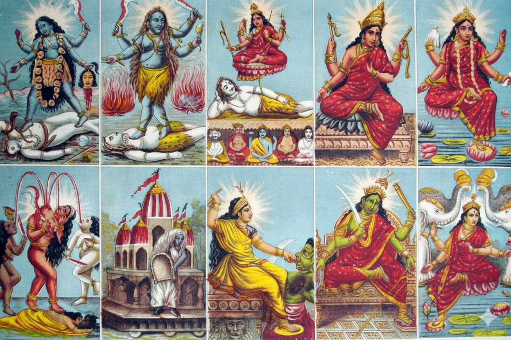

Exploring the Ten Mahavidyas: The Profound Wisdom Goddesses of Tantra
Jai Shree Ganesh! Welcome to this super detailed blog post on the Ten Mahavidyas, the powerful and enigmatic group of Hindu Tantric goddesses who embody various aspects of the divine feminine energy, Shakti. These Mahavidyas—Kali, Tara, Tripura Sundari (Shodashi), Bhuvaneshvari, Bhairavi, Chhinnamasta, Dhumavati, Bagalamukhi, Matangi, and Kamala—represent the ultimate knowledge (vidya) and are central to Shaktism, particularly in Tantric traditions. They symbolize destruction, creation, beauty, wisdom, and transcendence, drawing from Shaivism, Vaishnavism, and even Buddhist influences.
In this extensive exploration, we'll dive deep into each Mahavidya, covering their origin stories, physical appearances, associated chakras, mantras, yantras, powers, benefits of worship, temples, festivals, symbolism, Tantric aspects, and variations. To make it organized and easy to navigate, I've presented the key details for each goddess in a comprehensive table. This blog is as large and detailed as possible, drawing from reliable sources like Wikipedia and other web resources for accuracy and depth. Whether you're a devotee, a spiritual seeker, or just curious about Hindu mythology, this guide aims to illuminate the profound mysteries of these divine forms.
Let's begin our journey through the Ten Mahavidyas.
1. Kali: The Devourer of Time and Ultimate Reality
Kali, the first Mahavidya, is the fierce embodiment of time, death, and liberation. She is the ultimate form of Brahman in Tantric traditions and is revered for her power to destroy ignorance and ego. Her worship emphasizes transcendence and the cycle of creation and destruction.
| Category | Details |
|---|---|
| Story/Mythology | Kali emerges as the personification of Durga's rage in the Devi Mahatmya (6th century CE), defeating the demon Raktabija by drinking his blood to prevent duplication. In another tale, she manifests from Vishnu as Yoga Nidra to protect Brahma from Madhu-Kaitabha. Parvati merges with Shiva to defeat Daruka, turning black in rage. In the Devi Bhagavata Purana, she battles Shumbha and Nishumbha. As Chamunda, she slays Chanda and Munda. In Mahavidya origins, she arises from Sati or Parvati to surround Shiva. Associated with Krishna in Todala-Tantra. |
| Appearance/Iconography | Black or dark blue skin, emaciated, long tangled hair, red eyes, lolling tongue. Naked or with tiger skin, necklace of skulls, skirt of severed arms. Four arms: severed head and sword (left), abhaya and varada mudras (right). Stands on Shiva with right foot forward (dakṣiṇācāra). Mahakali: ten heads, arms, legs. Dakshinakali: benevolent, right foot on Shiva. Samhara Kali: two-armed, stands on corpse. Accompanied by serpents, jackal; mount: lion. |
| Associated Chakra | Heart chakra (Anahata) – controls biological and clairvoyant heart, blood. In some traditions, Muladhara (Root) for grounding and destruction. |
| Mantra | "Oṁ jayanti maṅgala kālī bhadrakālī kapālinī durgā kṣamā śivā dhātrī svāhā svadhā namostute"; "Oṁ krīṃ kālīkāyai namaḥ"; "Sarvamangal-māngalyē śivē sarvārthasādhikē. Śaraṇyē tryambakē Gauri nārāyaṇi namō'stu tē. Oṃ jayantī mangala kālī bhadrakālī kapālinī. Durgā kṣamā śivā dhātrī svāhā svadhā namō'stutē. Oṃ kālī kālī mahākālī kālikē parameśvarī. Sarvānandakarī devī nārāyaṇi namō'stu te." |
| Yantra | Kali Yantra – geometric design for Tantric meditation, often with interlocking triangles symbolizing destruction and creation. |
| Powers | Devourer of time, grants moksha (liberation), defeats demons, destroys ego and ignorance. Transcendental knowledge, protection for devotees. |
| Benefits of Worship | Liberation from fear, ego dissolution, courage in facing death, spiritual awakening. |
| Temples/Festivals | Kalighat Temple (Kolkata), Dakshineswar Kali Temple. Festivals: Kali Puja (during Diwali), Navratri. |
| Symbolism/Tantric Aspects/Variations | Symbolizes ultimate reality, destruction of Maya. Tantric: Kalikula tradition, worshipped by warriors. Variations: Mahakali (absolute night), Dakshinakali (benevolent), Samhara Kali (destructive). Associated with Matsya (Todala-Tantra), Rama (Guhyati guyha-tantra). |
2. Tara: The Guide and Protector
Tara, the second Mahavidya, is the goddess of compassion, energy, and salvation. She guides devotees across the ocean of worldly existence and is influenced by Buddhist traditions.
| Category | Details |
|---|---|
| Story/Mythology | Tara originates from Vasiṣṭha's worship in Mahācīna (Tibet), succeeding through kaula rites. Manifests as Shiva's mother post-Samudra Manthana to heal him. In Mahavidya legends, arises from Sati/Parvati. Associated with Atharvaveda; Bhairava: Akṣobhya. Syncretized with Buddhist Tara. |
| Appearance/Iconography | Light blue complexion, disheveled hair, crown with half-moon, three eyes, snake around throat, tiger-skin, garland of skulls. Four hands: lotus, scimitar, demon head, scissors. Left foot on Shiva. Variations: Ekajaṭa, Ugra-Tara, Mahogra, Kameshvari-Tara, Chamunda, Nila-Sarasvati, Vajra-Tara, Bhadrakali. |
| Associated Chakra | Throat chakra (Vishuddha) – clairvoyant throat, for speech and compassion. |
| Mantra | Not explicitly detailed; general Tantric mantras from Tārātantra. |
| Yantra | Not explicitly detailed. |
| Powers | Grants salvation, protects from dangers (Ugratārā), source of all energy. |
| Benefits of Worship | Ultimate knowledge, protection, energy boost. |
| Temples/Festivals | Tarapith Temple (West Bengal). Festivals: Tara Puja. |
| Symbolism/Tantric Aspects/Variations | Symbolizes guidance, compassion. Tantric: Worship in Tārātantra, Brahmayāmala; devotional through Ramprasad Sen. Variations: Ugratārā (fierce), Nīla Sarasvatī (esoteric knowledge). Associated with Matsya (Todala-Tantra), Rama (Guhyati guyha-tantra). |
3. Tripura Sundari (Shodashi): The Beauty of the Three Worlds
Tripura Sundari, also known as Shodashi or Lalita, is the third Mahavidya, representing beauty, bliss, and supreme consciousness.
| Category | Details |
|---|---|
| Story/Mythology | Ruler of Manidvipa; defeats Bhandasura in Lalita Sahasranama. Exists before creation, creates Trimurti. Assumes Krishna form. In Mahavidya legends, from Sati/Parvati. Associated with Srikula. |
| Appearance/Iconography | Molten gold complexion, three placid eyes, red/pink vestments, ornaments. Four hands: goad, lotus, bow, arrow. Seated on throne or lotus from Shiva's navel. Variations: 16-year-old girl, Vamakeshvara form with tiger skin, trident. |
| Associated Chakra | Third eye chakra (Ajna) – clairvoyant third eye for intuition and bliss. |
| Mantra | "Oṃ Śrī Mātre Namaḥ"; Lalita Sahasranama hymn. |
| Yantra | Sri Yantra – nine interlocking triangles, central bindu. |
| Powers | Grants liberation, rules cosmos, bestows bliss. |
| Benefits of Worship | Beauty, harmony, spiritual enlightenment. |
| Temples/Festivals | Tripura Sundari Temple (Tripura). Festivals: Lalita Jayanti. |
| Symbolism/Tantric Aspects/Variations | Symbolizes three worlds' beauty. Tantric: Shri Vidya school. Variations: Shodashi, Kamakshi, Rajarajeshvari. Associated with Parashurama (Todala-Tantra), Kalki (Guhyati guyha-tantra). |
4. Bhuvaneshvari: The World Mother
Bhuvaneshvari, the fourth Mahavidya, embodies the cosmos and space, as the queen of the universe.
| Category | Details |
|---|---|
| Story/Mythology | Created after Surya empowered by Tripura Sundari; pervades triple worlds. In Mahavidya legends, from Sati/Parvati. |
| Appearance/Iconography | Fair golden complexion, three content eyes, red/yellow garments, ornaments. Four hands: goad, noose, open palms. Seated on throne. |
| Associated Chakra | Heart chakra (Anahata) – embodies physical cosmos and energy. Crown in some lists. |
| Mantra | Not explicitly detailed. |
| Yantra | Not explicitly detailed. |
| Powers | Embodies cosmos, grants space and abundance. |
| Benefits of Worship | Prosperity, harmony with nature. |
| Temples/Festivals | Bhuvaneshwari Temple (Bhuvanagiri, Karnataka). Festivals: Navaratri, Bhuvaneshwari Jayanti, Adi-Puram. |
| Symbolism/Tantric Aspects/Variations | Symbolizes infinite space. Tantric: Form of Adi Parashakti. Variations: Linked to tri-bhuvana. |
5. Bhairavi: The Fierce One
Bhairavi, the fifth Mahavidya, is the goddess of Kundalini and destruction, consort of Bhairava.
| Category | Details |
|---|---|
| Story/Mythology | Consort of Bhairava; leader of 64 yoginis. In Mahavidya legends, from Sati/Parvati. |
| Appearance/Iconography | Red garments, garland of severed heads, three eyes, crescent moon. Holds rosaries, manuscripts, trident, sword, noose, bow. Blood on breasts. Variations: Beautiful woman or fierce. |
| Associated Chakra | Crown chakra (Sahasrara) – clairvoyant crown for wisdom. Third eye in some traditions. |
| Mantra | "Om Hasaim Hasakarim Hasaim Bhairavyay Namo Namah." |
| Yantra | Tripura-Bhairavi Yantra. |
| Powers | Kundalini awakening, wisdom, destruction of enemies. |
| Benefits of Worship | Spiritual adeptness, protection. |
| Temples/Festivals | Bhairavi temples in charnel grounds. Festivals: Navratri. |
| Symbolism/Tantric Aspects/Variations | Symbolizes terror and benevolence. Tantric: Associated with 64 yoginis, 52 Bhairavs. Variations: Shubhankari (auspicious). |
6. Chhinnamasta: The Self-Decapitated Goddess
Chhinnamasta, the sixth Mahavidya, represents self-sacrifice and the awakening of Kundalini.
| Category | Details |
|---|---|
| Story/Mythology | Parvati beheads herself to feed attendants Dakini and Varnini. Aids gods in demon wars. Buddhist origins from Chinnamunda. In Mahavidya legends, from Sati/Parvati. Linked to Renuka, Vishnu avatars. |
| Appearance/Iconography | Self-decapitated, nude, red/orange complexion, holding head and scimitar. Three blood jets to head and attendants. Stands on copulating couple. Adorned with serpents, mundamala. |
| Associated Chakra | Throat chakra (Vishuddha) – for self-expression; crown in some lists. |
| Mantra | Not explicitly detailed; from Pranatoshini Tantra. |
| Yantra | Not explicitly detailed. |
| Powers | Self-sacrifice for welfare, Kundalini awakening, victory over enemies. |
| Benefits of Worship | Courage, transcendence of ego. |
| Temples/Festivals | Chhinnamasta temples in cremation grounds. Festivals: Viraratri. |
| Symbolism/Tantric Aspects/Variations | Symbolizes prana control, sexual dominance. Tantric: Fierce aspect of Mahadevi. Variations: Prachanda Chandika. |
7. Dhumavati: The Smoky Widow
Dhumavati, the seventh Mahavidya, embodies misfortune, death, and the void.
| Category | Details |
|---|---|
| Story/Mythology | Arises from Sati's smoke or suicide; eats Shiva, becomes widow. Created by Durga to defeat demons. Linked to Nirriti, Alakshmi. In Mahavidya legends, from Sati/Parvati. |
| Appearance/Iconography | Old, ugly widow, pale-grey/black, dishevelled hair, crooked nose, missing teeth. Holds winnowing basket, boon gesture. Rides horseless chariot with crow banner. Variations: Young, beautiful in modern art. |
| Associated Chakra | Crown chakra (Sahasrara) – heart/middle region in some, for void and silence. |
| Mantra | "Dhum Dhum Dhumavati Svaha." |
| Yantra | Dhumavati Yantra for protection. |
| Powers | Grants siddhis, rescues from troubles, destroys enemies. |
| Benefits of Worship | Moksha, protection from negativity. Ideal for renouncers. |
| Temples/Festivals | Dhumavati temples in cremation grounds. Festivals: Krishna Paksha. |
| Symbolism/Tantric Aspects/Variations | Symbolizes inauspiciousness, void. Tantric: Worship at night, bare-bodied. Variations: Linked to Matsya, Vamana. |
8. Bagalamukhi: The Paralyzer
Bagalamukhi, the eighth Mahavidya, is the goddess of stambhana, paralyzing enemies.
| Category | Details |
|---|---|
| Story/Mythology | Manifests from Haridra Sarovar to calm storm. Defeats Madan by pulling tongue. Worshipped by Rama, Pandavas for victory. |
| Appearance/Iconography | Golden/yellow complexion, yellow clothes, ornaments. Holds club, pulls demon's tongue. Four arms, third eye, crescent moon. Variations: Crane head. |
| Associated Chakra | Crown chakra (Sahasrara) – for control and silence. |
| Mantra | "ह्लीं" (Hleem). |
| Yantra | Not explicitly detailed. |
| Powers | Stambhana (paralysis of foes), siddhis, riddhis. Makes conversationalists speechless, rich poor, etc. |
| Benefits of Worship | Victory over enemies, supernatural powers. |
| Temples/Festivals | Bankhandi Temple (Kangra), Pitambara Peeth (Datia). Festivals: Bagalamukhi Jayanti. |
| Symbolism/Tantric Aspects/Variations | Symbolizes control over speech. Tantric: For defeating adversaries. Variations: Dwi-Bhuja, Chaturbhuja. |
9. Matangi: The Outcast Goddess
Matangi, the ninth Mahavidya, is the Tantric form of Saraswati, goddess of music, knowledge, and the arts.
| Category | Details |
|---|---|
| Story/Mythology | Arises from leftovers (Uchchhishta-Matangini). Parvati as Chandala huntress. Daughter of Matanga. In Mahavidya legends, from Sati/Parvati. Kauri-bai legend. |
| Appearance/Iconography | Emerald green, red garments, gunja garland. Holds skull bowl, sword. Variations: Raja-Matangi with veena, parrots; four-armed with noose, goad, bow, arrows. |
| Associated Chakra | Throat chakra (Vishuddha) – origin of speech, Saraswati channel. Crown in some lists. |
| Mantra | "Aim"; "Om Hrim Aim Shrim Namo Bhagvati Ucchishtachandali Shri Matangeswari Sarvajanavasankari Swaha." Repeat 10,000 times. |
| Yantra | Not explicitly detailed. |
| Powers | Control over creatures, material desires, speech mastery. |
| Benefits of Worship | Artistic talent, knowledge, influence. |
| Temples/Festivals | Matangi temples in Varanasi. Festivals: Matangi Puja. |
| Symbolism/Tantric Aspects/Variations | Symbolizes outcasts, speech. Tantric: Offerings of leftovers. Variations: Uchchhishta-Matangini, Raja-Matangini. |
10. Kamala (Lakshmi): The Lotus Goddess
Kamala, the tenth Mahavidya, is a Tantric form of Lakshmi, goddess of wealth and prosperity.
| Category | Details |
|---|---|
| Story/Mythology | Emerges from Ocean of Milk churning; daughter of Bhrigu. Consort of Vishnu. In Mahavidya legends, from Sati/Parvati. Identified with Durga, other Shaktis. |
| Appearance/Iconography | Golden complexion, four hands (dharma, kama, artha, moksha). Holds lotus, sits on lotus throne. With elephants (Gaja-Lakshmi). Variations: 18 hands with weapons. |
| Associated Chakra | Six chakras (Shadadharadhi); Anahata (heart) for prosperity; crown in some lists. |
| Mantra | "Oṃ Śrīṃ Mahālakṣmyai Namaḥ"; "Oṃ Śrīṃ Śriye Namaḥ." |
| Yantra | Kamala Yantra with lotus petals. |
| Powers | Bestows wealth, prosperity, fertility, spiritual wealth. |
| Benefits of Worship | Material and spiritual abundance. |
| Temples/Festivals | Lakshmi temples worldwide. Festivals: Diwali, Sharad Purnima, Vaibhav Lakshmi Vrata (Fridays). |
| Symbolism/Tantric Aspects/Variations | Symbolizes fortune, liberation. Tantric: Prakriti, three gunas. Variations: Sri, Bhu, Durga forms. |
In conclusion, the Ten Mahavidyas offer a profound path to understanding the divine feminine in all its forms—from fierce destruction to serene prosperity. Their worship in Tantra leads to self-realization and empowerment. May this detailed exploration inspire your spiritual journey. Jai Mata Di!